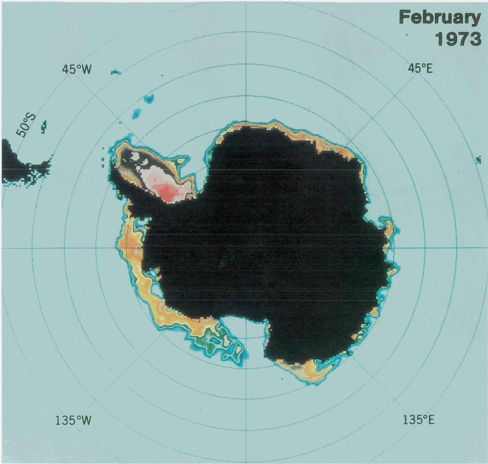

Comparing our map with NASA SP-459 (1983)
Step by step: how the printed February 1973 sea ice map from Zwally et al. (1983) was turned into something we can lay over our own ESMR result. Script: src/matlab/c1_sp459_compare.m · Notes: C1_SP459_comparison.md
0The idea
The book analysed the same instrument (Nimbus-5 ESMR, 19 GHz) for the same month (February 1973), but with the 1983 method: fixed tie points and no atmospheric correction. If our pipeline works, the ice edge should be in roughly the same place. The book only exists as a printed colour map, so we cannot just load its numbers.
Decision: we do not try to read concentration values from the colours (not asked in the task, and unreliable for a 50-year-old print). We only take ice / no ice from the map and compare the edge and the extent. For the ice area we use the number printed in the book (Table 3-2).


1Georeference: which pixel of the scan is which latitude/longitude?
The map has a printed grid (circles every 5° of latitude, lines every 45° of longitude, 0° at the top). We measured where these printed lines are in the image (129 points on the 55–70°S circles, 87 points on the meridians) and fitted a polar stereographic projection to them. The scan turned out to be slightly stretched (1.6 % taller than wide), so we fitted an affine transformation.
Check: the orange lines are our computed grid. They lie on the printed lines. Remaining error: 1.6 px ≈ 9 km, less than a third of a 30 km grid cell.


2Colours → classes: ice, water, land, or printed line?
The legend has 23 colour classes. We measured each legend colour in the scan, and gave every image pixel the class of the nearest colour. We also added "land" (black) and "printed grid line" so that the grid lines are not counted as ice.
⚠ "32 %" and "<14 % water" look almost the same. A simple "is it water-coloured?" threshold would punch holes into the pack ice, which is why we match against all colours. Every class from 16 % upwards counts as ice.


3Onto our 30 km grid
We use the same 30 km polar stereographic grid as the book. For each grid cell we look at the 7×7 scan pixels around its centre and take the majority class, leaving out the grid-line pixels. Then we remove single isolated "ice" cells: an ice cell needs at least 3 ice neighbours. These come from light speckles in the printed water that happen to match the "≥ 98 %" colour.


4Our map on the same grid
For every day: A6b correction (correct_day.m), SIC per pixel with that day's corrected South tie points. All pixels of the month are averaged per 30 km cell. Ice = mean SIC ≥ 15 %. Land = ERA5.
5Overlay and agreement
Left: our map with both ice edges. Right: cell by cell, who sees ice.

And the direct visual comparison: our map painted with the book's own colour classes, in the book's projection and frame.

6Numbers
| SP-459 (1983) | This work | Difference | |
|---|---|---|---|
| Ice extent (cells with ice), common cells | 5.72 × 10⁶ km² | 5.51 × 10⁶ km² | −4 % |
| Same classification (both ice or both water) | 95.7 % of the common area | ||
| Ice area (Σ SIC × cell area) | 2.71 × 10⁶ km² (Table 3-2) | 3.86 × 10⁶ km² | +42 % |
| Open-water tie point | 135 K (fixed) | 140.9 K (daily, corrected) | |
| 100 % ice brightness temperature | ≈ 0.92 · Ti ≈ 240–245 K | 201.0 K | |
| Sector (SP-459 definition) | Extent SP-459 | Extent ours |
|---|---|---|
| Weddell (60°W–20°E) | 1.63 | 1.73 |
| Indian Ocean (20–90°E) | 0.84 | 0.59 |
| Pacific (90–160°E) | 0.82 | 0.75 |
| Ross (160°E–130°W) | 1.10 | 1.18 |
| Bellingshausen-Amundsen (130–60°W) | 1.33 | 1.26 |
10⁶ km², common cells. Full table: output/C1_sp459_extent.csv.
7What it means
Source: Zwally, Comiso, Parkinson, Campbell, Carsey, Gloersen (1983), Antarctic Sea Ice, 1973–1976: Satellite Passive-Microwave Observations, NASA SP-459, Fig. 5-2a and Table 3-2. Images are created by c1_sp459_compare.m in output/; run the script first if they are missing.